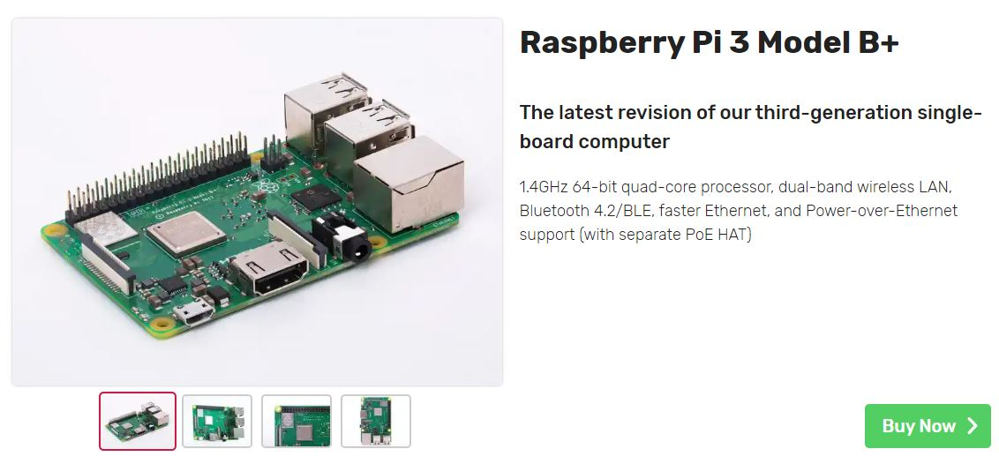
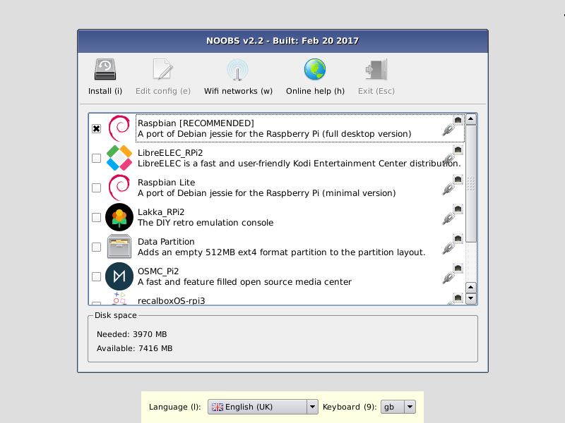
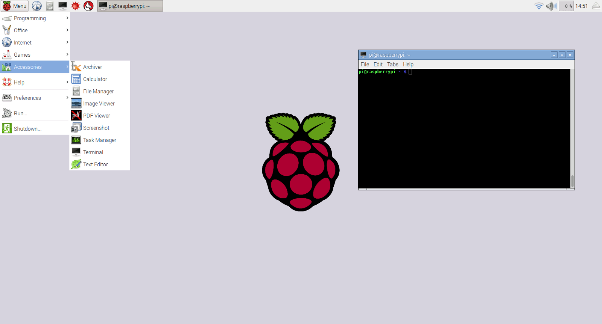
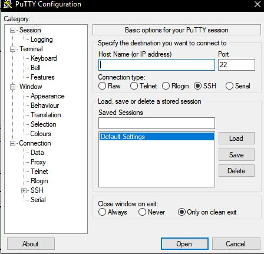
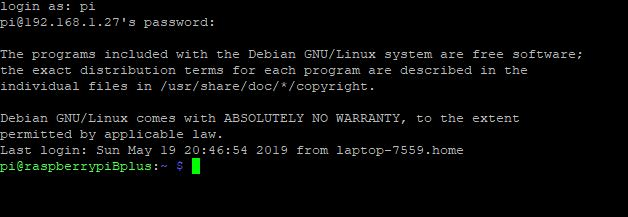
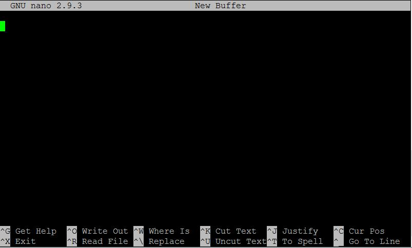

Raspberry π
Getting Started with RPi
A Raspberry Pi is a pocket sized computer that is widely used in various DIY projects that require slightly more data processing or capabilities than an Arduino. This also means, they are
a little more difficult to use, but at the same time can be much more exciting. Unlike an Arduino, you program the Raspberry Pi on the Raspberry Pi itself, rather than using an IDE on your PC. Another method
many people use is called SSH, which allows you to control/program the RPi from your computer.

Although you can't buy directly off of their website, you can find a list of sellers on their website and on Amazon.com. I recommend you buy a
16 GB Micro SD card and Micro USB power cord separately. Make sure your Micro SD card also comes with an SD adapter so you can upload the boot image from your computer.
Setup
- Download NOOBS (New Out Of Box Software) from here.
- Extract the files from the downloaded zip folder.
- Copy and paste the extracted folder CONTENTS onto the SD card.
- Wait until the transfer is finished.
- Safely eject the SD card and insert it into the raspberry Pi
Once you have successfully installed NOOBS, you must plug it into a TV or monitor for setup. Next, you can plug it into any 5V USB port you have on your computer or 5V power supply with a Micro USB connector. If all goes well,
you will see a bunch of colors and then a prompt asking what to install. First, select Wifi Networks and connect to your wifi as it is necessary to download the files (also ensure that your keyboard is set to "US" and not "GB", unless that is where you live ;).
Then select Raspbian, which is the default Raspberry Pi Operating System, and finally Install. The other operating systems can be useful for other kinds of projects like media servers, retro gaming consoles, etcetera.

Your screen may look different from the one in 2017.
Once everything is finished booting up, we will need to change some things in the Raspberry Pi settings to be able to connect to it via SSH (Secure Shell). Open up a new terminal and type in:
sudo raspi-config
Keep in mind that the default password is "raspberry" and the username is "pi".

This is what your home screen may look like.

The Raspberry Pi configuration tool
Go to Interfacing Options > SSH > Enable. Finally, back out and finish - it may require a reboot. Once booted back up, open up a terminal and type in:
ifconfig wlan0 | grep "inet addr"
Breaking down the command: "wlan0" stands for "Wireless Local Area Network 0", which is our wireless adapter name, "grep" is a second command used to give us all text on the same line as "inet addr".
This will give us the RPi's IP address which we will use to connect via SSH. The IP address is found directly after the "inet addr:" text. Now, go back to your PC and download
PuTTY
OR, if you're on a Mac, type in:
ssh pi@[RPi IP address] -p 22
The -p 22 stands for port 22, which is the default port used for Secure Shells and is very widely used for remote access.
If you are on a PC, you need to use PuTTY, so once you have finished downloading it, open it up and you will be brought to a new PuTTY window.

Putty is a tool used to SSH into other computers and systems from a windows computer.
Now, simply type in the Pi's IP address and press open. Make sure you allow the RSA key if it gives you a warning.

You should see a login something like this.
Command Line
When you first log in to a raspberry pi, by default, your command line will be in the home directory. To navigate into a folder, use the command:
cd [name of folder]
Or, to back out
of one -
cd ..
If you don't know the folders in your directory, just off the top of your head, use the command -
ls
which lists all the files and folders inside of the directory you are in.
In our home directory, which we can easily go to with the command -
cd ~/
let's edit a new file called "helloWorld.py" with the command -
nano helloWorld.py

This is a new file created from the GNU "nano" text editor, which is the one I usually use.
Now, inside the new file we just created, we are going to write a simple python program to print out a message that says "Hello [your name]" with the code -
name = input("What is your name? ")
print("Hello " + name + "!")
To close and save the file press [ctrl] + X, press "Y" then enter.
Now, back in the command line, to run the file you just created, type in -
python helloWorld.py
You should now be greeted with an input asking what your name is. Type it in, press enter, and see what happens.
Other Projects
Here is a little inspiration for your next project:
Ultimately, I will leave this project up to you to figure out, but here are a few tips to get you started:
- Make an account at IFTTT and check out "WebHooks". With the simple GET or POST request to a special URL, you can set the action to be a notification on your phone, or even an Alexa alarm
- Use an LED strip light and take apart the controller (the one the lights are connected to, and instead of triggering the MOSFETS
with signals from the remote, try something called PWM
- Be careful and try not to electrocute yourself. Always unplug before you solder.